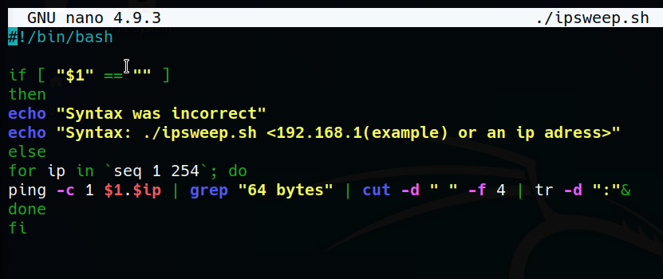

In this section we want to detect which ips are available so we will send pings and try to get ips which return response to our pings. This is called ping sweep
so to automate this we will write a script.

-c 1 means that we only want to send one package. Otherwise that will send unlimited package counts until we say stop.


with -d we specify that which character will be a separator for fields and then with -f 4 we take fourth field which is 10.0.2.15:
we need to get rid of :
so with tr command we obtain that

ipsweep.sh

so in responses there is always a line with "64 bytes". So as we need to do first thing is grab that line with grep command.
to enable to be able to write more than one command we use called pipe (|)
This trailing ampersand directs the shell to run the command in the background, that is, it is forked and run in a separate sub-shell, as a job, asynchronously.